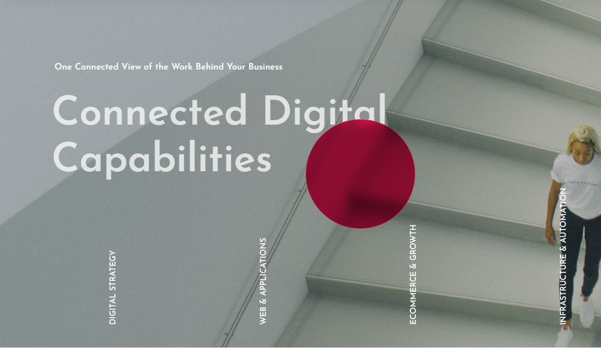
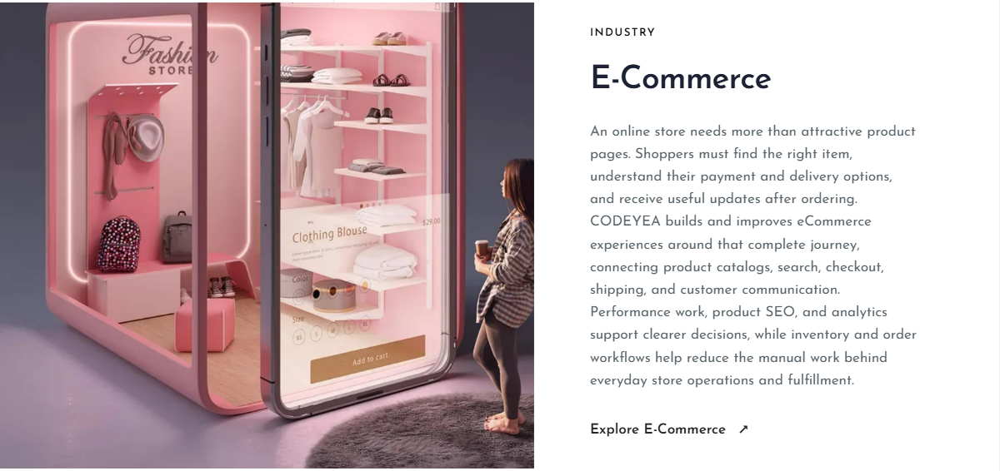
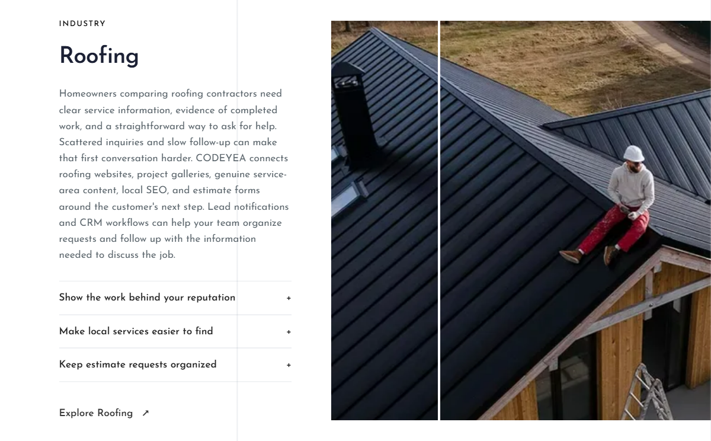
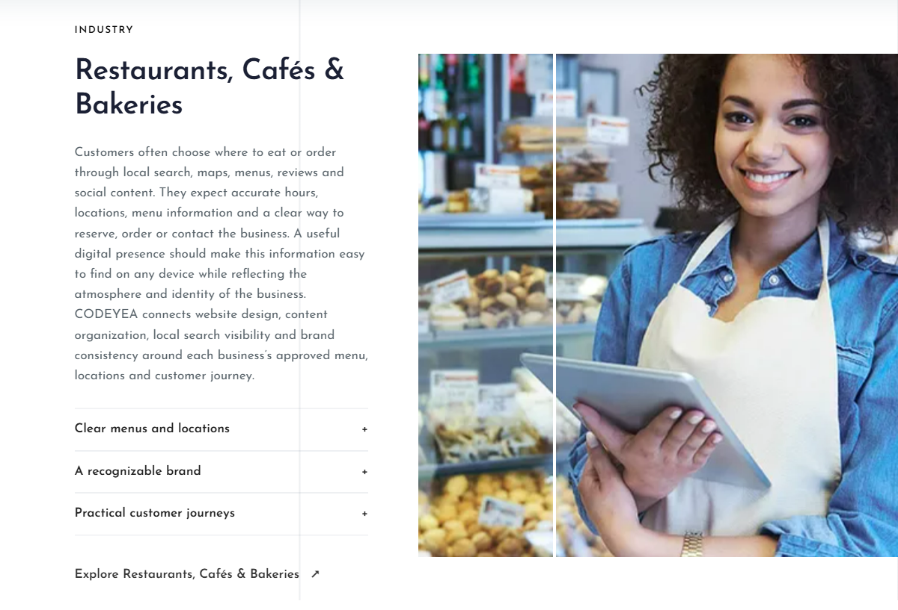

About pointer and Industries directory
Actual website changes, verified on the production build. The About glass circle follows the pointer, fades on exit and continues following after reentry. The directory has 14 industries. Existing order and the four repeating layouts are preserved. New entries use their existing approved detail-page text and photographs.
Open About · Open Industries · Edit Industries in CMS
About glass circle
Previously approved size and glass appearance Current section, with pointer tracking restored
Current section, with pointer tracking restored
Layout 4 — Beauty, Skincare & Med Spa
Existing E-Commerce section
New Beauty section Layout 1 — Restaurants, Cafés & Bakeries
Existing Roofing section
New Restaurants section
Layout 2 — Solar Energy
Existing Healthcare sectionNew Solar section
163 tests passed, including private CMS save and restore of the new fields. Browser checks cover pointer tracking, fade/reentry, 14 sections, detail links, loaded images, 1440/768/390px widths, and actual CMS fields. No owner draft was saved or published during browser review. No production deployment.